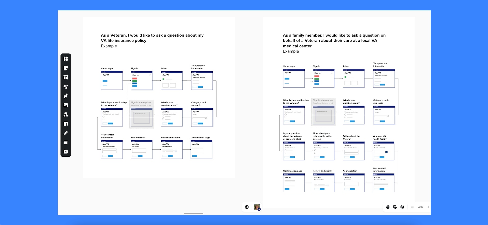
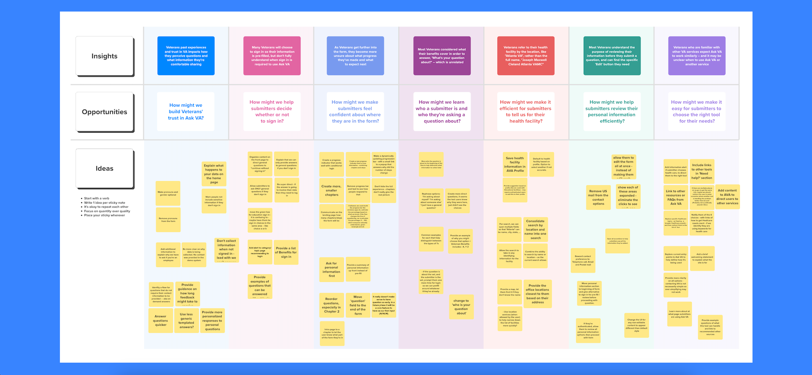
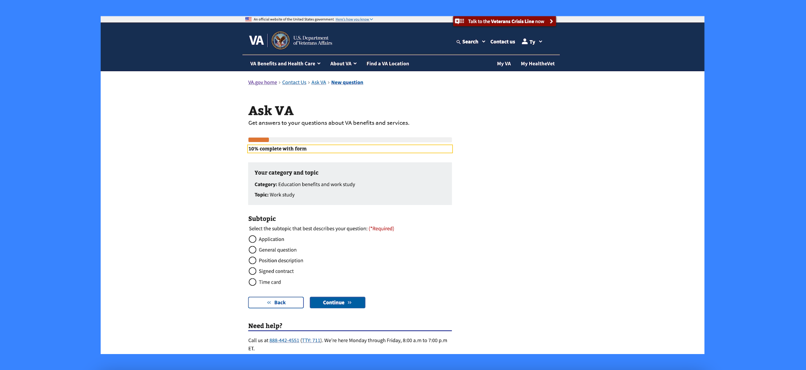

Making it easier to ask questions about VA benefits and services
Project Overview
I led design and user research to migrate Ask VA from a standalone Microsoft portal to VA.gov, transforming a 42-field contact form into an accessible, mobile-friendly service that better serves 500,000 Veteran inquiries annually.
Context
In 2024, Veterans and their support networks submitted 500,000 questions to the U.S. Department of Veterans Affairs through Ask VA. Getting answers to questions is critical for Veterans to access or resolve issues with their benefits and services. And the original standalone Microsoft portal had significant usability issues. It wasn't mobile-friendly or Section 508 compliant, and overwhelmed Veterans with a confusing 42-field form. This was particularly challenging for Veterans with cognitive disabilities or those using assistive technology, creating barriers to accessing critical support.
Plan
I engaged with over 50 specialists across 18 VA business lines to understand existing workflows and technical constraints. Through stakeholder workshops and collaboration sessions, we mapped inquiry routing processes and identified simplification opportunities that wouldn't disrupt backend operations. My research goals focused on reducing form complexity, improving accessibility, and applying plain language principles while maintaining CRM system compatibility.
Collect

After creating high-fidelity wireframes using VA.gov's design system components, I built interactive prototypes in Figma and worked with engineers to develop coded prototypes for testing with assistive technology, such as JAWS, VoiceOver, ZoomText and Dragon.
In addition to extensive testing with Veterans, I also regularly met and led workshops with agents who respond to inquiries received through Ask VA.
Share
After each research study, I ran workshops to share insights with the team and led prioritization exercises to land on next steps. I regularly presented research and design decisions across departments at VA, including OCTO (Office of the Chief Technology Officer) and VEO (Veterans Experience Office).
Impact

We successfully migrated Ask VA to VA.gov, creating a mobile-friendly product that meets VA.gov design standards and accessibility requirements. The redesigned form fields are more intuitive and accessible, with plain language improvements significantly enhancing Veteran comprehension and trust.
This work laid the foundation for Ask VA's evolution into a more intelligent service, powered by greater automation, that guides Veterans to the information they need. I touch on our future strategy in another post.